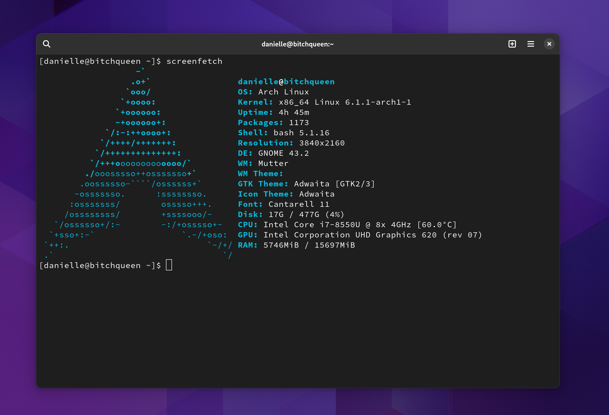
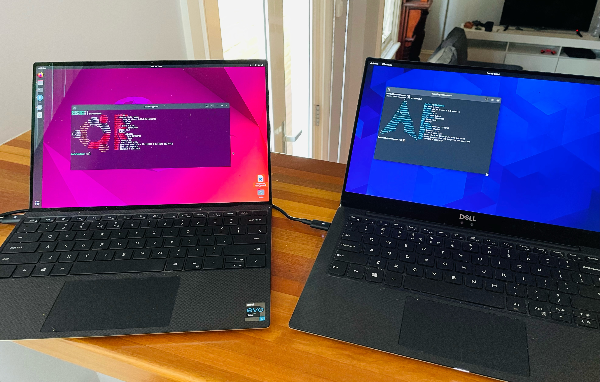
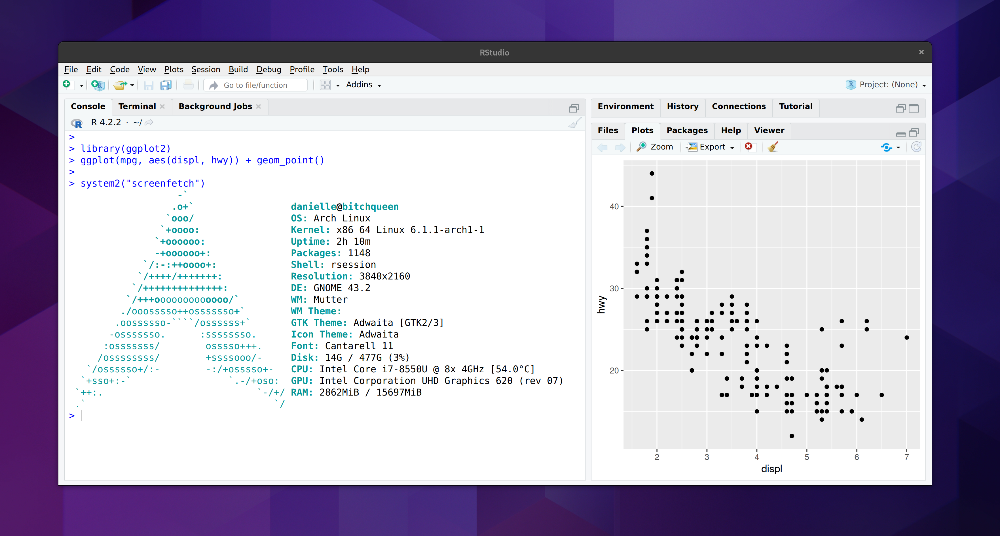

![]()
I installed Arch Linux on an aging Dell XPS 13 today.
Did I plan to do this when I woke up this morning? No, it was an impulsive decision. Was it a sensible way to spend the last Friday of 2022? Also no. Was it the kind of thing that will pay off in the long run through a deeper technical understanding of… something? Again, the answer is no.
Ah, but will it impress people and make them think I am cool?
Oh honey.
No.1
But look…



So pretty. So pointless. So fun.
Installing Arch
I have absolutely no intention of writing a “how to install Arch” guide, for many excellent reasons. Top of that list is that I am a complete amateur when it comes to Arch and I have no idea whatsoever what I’m doing. The only reason any of this happened is that I happened to have a spare laptop2 and couldn’t think of anything better to do with it. My point is I have no business whatsoever in trying to guide anyone else through the installation process. What I am going to do, however, is jot down my notes to myself on the process. I may need them again…
The installation guide (https://wiki.archlinux.org/title/installation_guide) is good but dense, and I had to read a lot of the documents it links to in order to make progress. It took me three tries to get a working installation, because I missed some subtle thing (e.g., the first time I didn’t have the bootable USB booting in UEFI mode, because obviously I would have thought of that at the beginning… sigh).
Everything became easier once I started feeling comfortable using pacman.
The network configuration step gave me some grief. Eventually I got it to work when I installed NetworkManager and enabled
NetworkManager.service, which in turn only made sense to me after I’d read about start/enable and realised that “starting” a service sets it running in the background now, and “enabling” it means it will start automatically on startup.Toward the end of the installation it tells you to install a bootloader. I thought I wouldn’t need to since I already had grub on my machine from the previous Ubuntu install but in the end it didn’t work without going through the GRUB install process
Setting up users was an odd exercise in reminding me that I’d forgotten what life was like before sudo. During the initial installation I set up a root user, but no regular users, so my first step was to give myself a … um, me. This article on adding users on Arch Linux was helpful. Partly because it’s a nice walkthrough, but also because it clued me into the fact that Arch doesn’t come with sudo, so I had to install that. It also highlighted things I’d never thought about with sudo before, mostly around which users have sudo privileges. Anyway, the article walked me through the process so now I am danielle on my Arch box (insert the usual Australian joke about getting a root). I added myself to the wheel group so that I can escalate to admin privileges using sudo, and I’m done.
As much as the thought of returning to my childhood and running a computer without any desktop environment at all amused me… no. No we are going to have a desktop. I did think about other possible desktop environments besides old faithful, but in the end decided that I actually quite like the look and feel of default GNOME (even without the various tweaks that distros usually overlay on top of it) so I installed that. I did, however, make one concession to nostalgia. I decided not to have the machine automatically boot into GNOME. Instead I followed the instructions so I could start it with
startxas soon as I log in, or choose to stay in the shell.Installing a decent browser (firefox, obviously…) was easy, but not surprisingly the font situation for the web was a bit tricky. Arch doesn’t come with an extensive font library so the browser would often rely on fallback fonts for pages that don’t bundle the fonts, making a lot of pages look a bit unpleasant. Fixing that took a bit of digging. The best description on fonts I found was this gist. I have a suspicion that it’s the noto-fonts package that does a lot of the work in fixing the issues
Fixing the touchpad scroll direction and speed was awkward too. Initially the settings panel in GNOME didn’t acknowledge that I even had a touchpad, which was annoying. So I started trying to edit the xorg.conf settings and… actually I don’t think that fixed anything but weirdly after editing
/etc/X11/xorg.confthe touchpad settings magically showed up in the GNOME settings panel and then I could edit them. Yeah. I have no idea whatsoever whether this had anything to do with me, or if the gods at large were messing with me or what. So um… yeah, future Danielle, best of luck!
Moving on…
Setting up R on Arch
Any time I get a new machine set up, my first discretionary task is to make sure that I can do data science work with it (that’s a depressingly revealing statement about me). Once upon a time that really meant getting R set up, but I’m a bit more polyglot nowadays (gasp!). Nevertheless, R is my first love so I always start there…
Some of the set up tasks are easy, or at least as easy as anything gets on linux. For example, installing R is “easy”, and installing git is “easy”. Similarly, if you use VS code as your IDE, that too is “easy”. These are all easy tasks because they’re officially supported. You can install all three with one command:
sudo pacman -S r git codeThat installs the most recent R release, the current git release, and the current VS code release. It’s considerably easier than installing on a Ubuntu LTS release, especially for R, to be honest. On Ubuntu there’s a lot of messing about trying to get the latest versions. The Arch repositories are up to date, which does simplify matters considerably.
Things become a little trickier when you have to venture outside the official repositories. For example, suppose I want to use RStudio as my IDE. There isn’t an Arch package for RStudio, and – to the surprise of nobody – Posit doesn’t release one either. However, I’m hardly the first person to want to use RStudio on Arch, so it is equally unsurprising that the Arch community has stepped in to help fill the gap.
In other words, I’ve reached the point where I have to start installing from the Arch user repository (AUR). This is a community resource, so you have to be a bit more careful in checking that the packages you install from here are good ones, but that’s no different to investigating an R package before installing from CRAN or GitHub. It’s also really important to read through the AUR guidelines before you start trying to use it, because it talks about the tools you’ll need to install first and has a nice walkthrough of the process. So I did that, installed everything from the base-devel group and got started…3
There are a few different user submitted packages for RStudio on the AUR. The one I decided to use was rstudio-desktop-bin, largely because it’s a binary4 and because other Arch users seem to like it. It’s a multi-step process. First I had to get a copy of the package files. The easiest way is with git:
git clone https://aur.archlinux.org/rstudio-desktop-bin.gitThe rstudio-desktop-bin folder that I just downloaded contains a PKGBUILD file… opening it in a text editor reveals that it’s basically a recipe for building a package. It doesn’t actually contain any of the components you need, and in fact for RStudio what you’ll notice when you take a peek at the inside is that it’s essentially a wrapper telling Arch how to use the .deb binary that Posit releases for Ubuntu/Debian systems.
To build the package I navigate to this folder and call makepkg:
cd rstudio-desktop-bin
makepkg -sThe -s flag attempts to synchronise: it will download and install any dependencies, as long as those are official dependencies (I think?). It doesn’t install dependencies when those are also packages on the AUR. Those you just have to do manually.
Anyway once makepkg does its job, you end up with a whole lot of new files in that folder. The one that we care most about is the one with the .pkg.tar.zst file extension. That’s the one that pacman can install:
sudo pacman -U rstudio-desktop-bin-2022.12.0.353-1-x86_64.pkg.tar.zstThis will install RStudio and… it almost works. When I attempt to open RStudio I get a message in the Rstudio window complaining about a missing library. Digging into the comments on the rstudio-desktop-bin revealed the problem. One of the system dependencies for RStudio is missing from the PKGBUILD file: you have to install openssl-1.1 to make it work. This did the trick for me:
sudo pacman -s openssl-1.1And that’s it. Just like that I have RStudio running on Arch…
… and just like that I felt an immediate need to also get quarto running on Arch so that I could write this blog post on my new Arch box. Quarto is also available on the AUR, and I installed it using the quarto-cli package, following essentially the same process described above. There were no missing dependencies, and everything seems to work fine.
I’m suspicious. Things aren’t supposed to work first time. I fully expect my laptop to catch fire simply because I am doing something foolish.
Was it worth it?
Probably not. But I don’t care. I had fun. Sometimes we do things because it’s useful to do them. Sometimes we do things because we like doing them. It’s important to know the difference. This was fun.
Footnotes
No.↩︎
Don’t ask why, it’s a long and unbearably stupid story.↩︎
After I posted this on mastodon, Urs Wilke kindly told me about yay, which simplifies the process of installing packages from AUR. I intend to look into this! It looks really nice↩︎
I have indeed managed to build the RStudio IDE from source on Arch. Once. I shan’t be doing that again. All my horrible memories of building all the Apache Arrow R and C++ libraries from source for the very first time came flooding back.↩︎
Reuse
Citation
@online{navarro2022,
author = {Navarro, Danielle},
title = {Btw {I} Use {Arch} Now},
date = {2022-12-31},
url = {https://blog.djnavarro.net/posts/2022-12-31_btw-i-use-arch},
langid = {en}
}